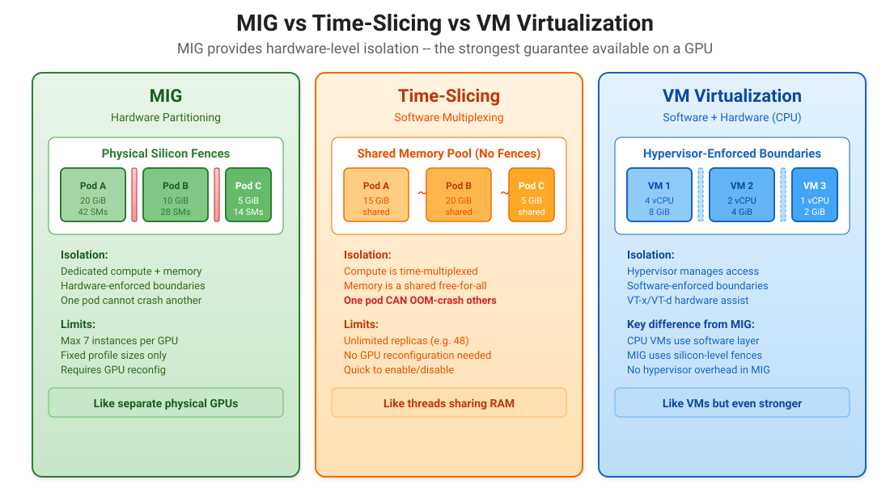
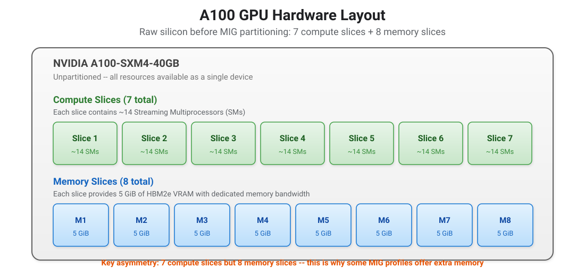
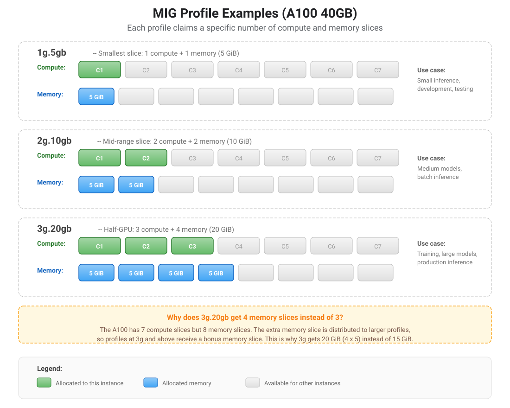
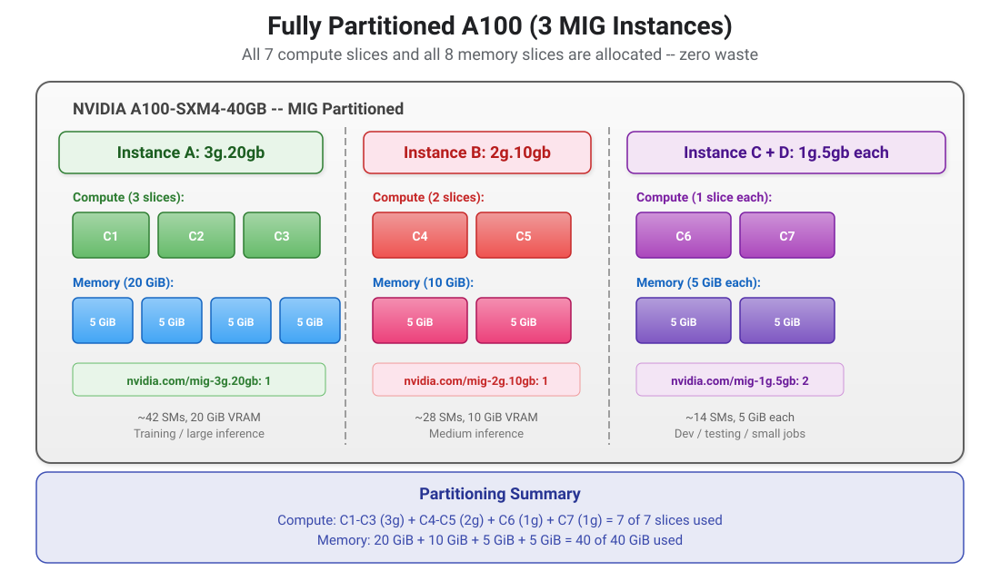
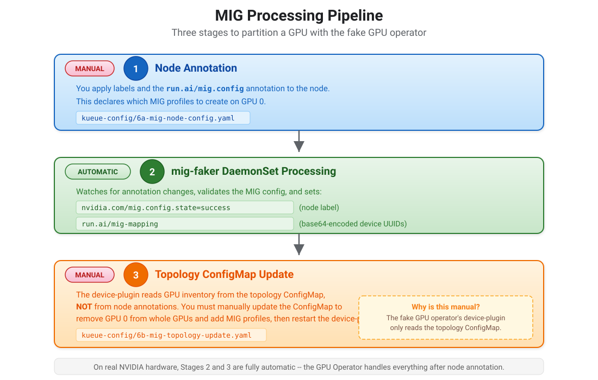

MIG Partitioning and Preemption
NVIDIA Multi-Instance GPU (MIG) is a hardware feature on A100 and H100 GPUs that partitions a single physical GPU into multiple isolated GPU instances. Each instance has its own compute resources, memory, and memory bandwidth — completely isolated from the others, like separate physical GPUs.
In this chapter, you partition one of the four A100 GPUs on worker-1 into three MIG instances of different sizes, while leaving the other three GPUs as whole devices. This is called mixed mode — some GPUs are MIG-partitioned, others remain whole. You then configure Kueue to manage MIG resources alongside whole GPUs, submit workloads targeting specific MIG profiles, and exercise priority preemption within MIG slots.
Understanding MIG: Hardware-Level GPU Partitioning
Why MIG exists
Without MIG, a GPU is an all-or-nothing resource. If a developer needs only 5 GiB of VRAM for a small inference job, they still consume the entire 40 GiB A100. The other 35 GiB sits idle, and no other workload can use the GPU until the first one finishes.
MIG solves this by slicing the GPU silicon itself into smaller, fully independent GPU instances. Each instance behaves as if it were a separate physical GPU — with its own compute engines, its own memory, and its own memory bandwidth.
MIG vs VM virtualization
If you have experience with CPU virtualization, MIG is the closest GPU equivalent — but stronger.
| Property | VM Virtualization (CPU) | MIG (GPU) |
|---|---|---|
Isolation mechanism |
Hypervisor software + hardware assist (VT-x/VT-d) |
Physical silicon-level fences in the GPU die |
Memory isolation |
Hypervisor manages page tables; software-enforced |
Dedicated memory slices with separate memory controllers; hardware-enforced |
Compute isolation |
CPU time-slicing via hypervisor scheduler |
Dedicated Streaming Multiprocessors (SMs); no time-sharing |
Error isolation |
A crash in one VM does not affect others |
A crash in one MIG instance does not affect others |
Performance isolation |
Can experience "noisy neighbor" effects |
No noisy neighbor — each instance has guaranteed bandwidth |
Overhead |
Small hypervisor overhead |
Zero overhead — no software layer between workload and silicon |

The key distinction: VM virtualization uses a software layer (the hypervisor) to divide resources, while MIG uses physical fences baked into the GPU silicon. A MIG instance is not a virtual GPU — it is a physically separate section of the chip with its own memory controllers and compute engines.
Inside the A100: Compute slices and memory slices
To understand MIG profiles, you must understand the physical layout of the GPU die. The A100 40GB contains two types of building blocks:
-
Compute slices (also called GPU slices or GPC slices): Each contains approximately 14 Streaming Multiprocessors (SMs), which are the actual processors that execute CUDA kernels.
-
Memory slices: Each provides 5 GiB of HBM2e VRAM and a dedicated memory controller with its own bandwidth.
The A100 40GB has 7 compute slices and 8 memory slices. This asymmetry is intentional — NVIDIA designed the chip with one extra memory slice so that larger MIG profiles can receive bonus memory.

Reading MIG profile names
MIG profile names follow the format Xg.Ygb, where:
-
Xg = the number of compute slices (GPU slices) allocated to the instance. This determines processing power — how many SMs are available.
-
Ygb = the gigabytes of memory allocated. This determines VRAM — how large a model can be loaded.
For example, 3g.20gb means: 3 compute slices (approximately 42 SMs) and 20 GiB of VRAM (4 memory slices).
|
The memory number is not always a simple multiple of the compute number.
Because the A100 has 8 memory slices but only 7 compute slices, larger profiles receive a bonus memory slice.
This is why |
Available MIG profiles on the A100 40GB

The following table lists all supported MIG profiles for the A100 40GB:
| Profile | Compute slices | Memory slices | VRAM | Typical use case |
|---|---|---|---|---|
|
1 |
1 |
5 GiB |
Small inference, unit tests, CI/CD validation |
|
1 |
2 |
10 GiB |
Memory-heavy tasks with minimal compute (A100 80GB only) |
|
2 |
2 |
10 GiB |
Medium models, batch inference, data preprocessing |
|
3 |
4 |
20 GiB |
Training, large inference, production serving |
|
4 |
4 |
20 GiB |
Larger training jobs that need more SMs (A100 80GB only) |
|
7 |
8 |
40 GiB |
Full GPU — equivalent to no MIG (useful for testing) |
|
Not all profiles are available on all GPU models.
The A100 40GB supports |
Fitting MIG slices together: Placement rules
MIG slices must fit together like Tetris blocks. You cannot mix any arbitrary combination — the profiles must add up to exactly 7 compute slices and 8 memory slices (on the A100 40GB).
| Combination | Compute used | Memory used |
|---|---|---|
1x |
7 of 7 |
40 of 40 GiB |
1x |
7 of 7 (3+2+1+1) |
40 of 40 GiB (20+10+5+5) |
1x |
7 of 7 (3+1+1+1+1) |
40 of 40 GiB (20+5+5+5+5) |
3x |
7 of 7 (2+2+2+1) |
35 of 40 GiB (10+10+10+5) |
7x |
7 of 7 |
35 of 40 GiB |
|
Some combinations waste memory.
Seven |

What MIG Produces
After partitioning GPU 0 into MIG slices, worker-1 reports:
| Resource | Count | Description |
|---|---|---|
|
3 |
GPUs 1-3 remain whole (was 4 before MIG) |
|
1 |
3 compute slices, 20 GiB memory |
|
1 |
2 compute slices, 10 GiB memory |
|
1 |
1 compute slice, 5 GiB memory |
Pods request MIG instances by resource type (e.g., nvidia.com/mig-3g.20gb: 1) instead of nvidia.com/gpu.
How the Fake GPU Operator Implements MIG
The fake GPU operator simulates MIG without real NVIDIA hardware. It uses two components that work together:
-
mig-faker DaemonSet: Runs on each GPU node and watches for MIG configuration changes. When you annotate a node with
run.ai/mig.config, the mig-faker validates the requested MIG profiles, generates synthetic device UUIDs for each MIG instance, and writes them back as arun.ai/mig-mappingannotation. It also sets thenvidia.com/mig.config.state=successlabel to signal that partitioning succeeded. The mig-faker has hardcoded GPU Instance ID tables for A100 40GB and A100 80GB models, mapping profile names like3g.20gbto the correct GPU Instance IDs that real NVIDIA drivers would produce. -
device-plugin DaemonSet: Registers GPU resources with kubelet. For whole GPUs, it advertises
nvidia.com/gpu. For MIG, it reads theotherDevicessection of the node’s topology ConfigMap and registers each MIG profile as a separate resource type (e.g.,nvidia.com/mig-3g.20gb).
The gap between these two components is the reason Stage 3 below is manual: the mig-faker writes annotations, but the device-plugin reads the topology ConfigMap. Nothing in the fake GPU operator bridges the two automatically.
What’s Already Automated
The Helm chart (helm-charts/fake-gpu-operator/values-ocp.yaml) already sets migStrategy: mixed.
This tells the fake GPU operator to support MIG alongside whole GPUs.
No Helm upgrade is needed — the operator is already MIG-ready.
# Already set in values-ocp.yaml (no action needed)
topology:
migStrategy: mixedMIG Processing Pipeline
MIG partitioning in the fake GPU operator requires three stages. This mirrors the real-world workflow (node annotation + operator processing) but with an extra manual step because the device-plugin doesn’t automatically update allocatable resources from MIG annotations.

Automated vs Manual Summary
| Item | Automated / Manual | Details |
|---|---|---|
|
Automated (in Helm values) |
Already set — no upgrade needed |
mig-faker toleration fix |
Manual, one-time (Step 35) |
Patch DaemonSet to tolerate GPU taint (Helm chart bug) |
Node MIG annotation |
Manual (Steps 36-37) |
Edit node name in |
mig-faker processing |
Automated (Step 37a) |
DaemonSet watches annotation, sets success label |
Topology ConfigMap update |
Manual (Step 37b) |
Edit node name/UUIDs in |
Device-plugin restart |
Manual (Step 37c) |
Delete device-plugin pod so it re-reads the ConfigMap |
Update whole-GPU quota |
Manual (Step 39) |
Patch |
MIG Kueue resources |
Manual (Steps 40-42) |
|